1. Tear down handle& Accessory 8
3. Tear down Brush Top Cover 9
4. Tear down Brush roller Motor 10
5. Tear down Main Motor and PTC（Sewage /humidity sensor） 10
6. Tear down Micro swtich(big wheel) 11
7. Tear down Assy Body Part(Plastic part/Wire/water level sensor/Pump/PCBA) 12
History
| No | Date | Comments | Version | ISSUE | Approve |
|---|---|---|---|---|---|
| 1 | 24.08.12 | First Draft | 1.0 | Qiu | |
Tools
Electric screwdriver\Long-nose pliers\Slotted screwdriver\Zip tie\Scissors
Repair notice
Important Safety Instructions:
1. Wear gloves when carrying out any repair work.
2. Ensure that there are no exposed electrical wires in the maintenance environment and strictly prohibit direct testing of the equipment with AC power to prevent electric shock.
3. When repairing electrical components, please disconnect the battery pack first.
Preparation:
Empty the clean water tank and dirty water tank before disassembly.
Replacement requirements:
1. All parts that have passed the cross-check must be removed from the faulty machine, fitted with the user's original adapter and then subjected to the next replacement test.
2. After repair, organise the removed old parts and unused parts.
Range of Product
| No | Product Name | Factory Serial Model | SKU | Remark |
|---|---|---|---|---|
| iCarpet Complete | CL2043F-02 | CW011100AU | iCarpet | |
| iCarpet Complete | CL2043A-01 | CW010100US | ||
| iCarpet | CL2043J-01 | CW011500SA | ||
| iCarpet | CL2043F-01 | CW010500AU | ||
| iCarpet | CL2043C-02 | CW010600UK | ||
| iCarpet | CL2043C-01 | CW010300EU | ||
| iCarpet | CL2043A-02 | CW010800US | ||
| Carpet One Pro | CL2043L-01 | CW102000RU | Carpet one Pro | |
| Carpet One Pro | CL2043H-01 | CW101100AU | ||
| Carpet One Pro | CL2043E-02 | CW101300UK | ||
| Carpet One Pro | CL2043E-01 | CW100700EU | ||
| Carpet One Pro | CL2043D-01 | CW100300US | ||
| Carpet One Complete | CL2043-02 | CW101500US | Carpet One | |
| Carpet One | CL2043K-01 | CW101800SA | ||
| Carpet One | CL2043B-02 | CW101200UK | ||
| Carpet One | CL2043B-01 | CW100500EU | ||
| Carpet One | CL2043-01 | CW101400US |
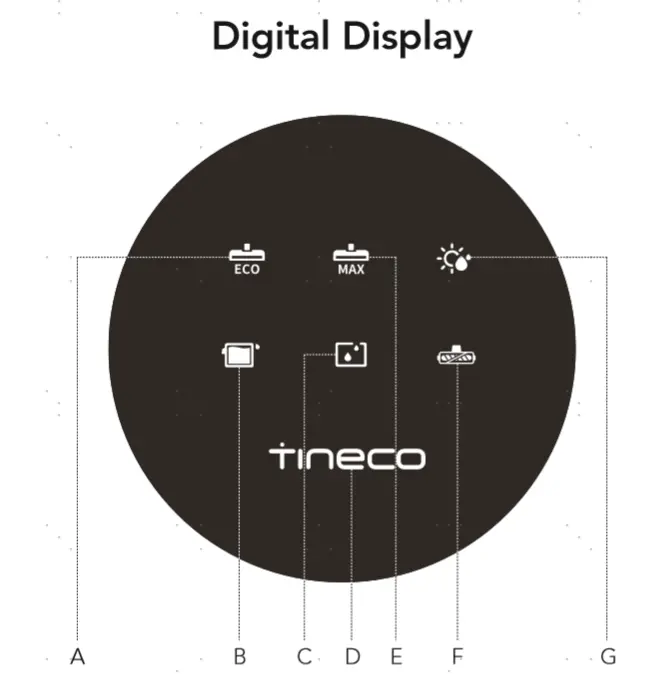
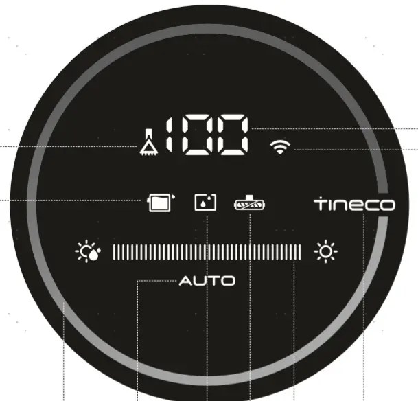
Range of Spare Part
| No | Spare Part Name | Remark |
|---|---|---|
| Brush Roller Cover | ||
| Brush Roller | ||
| Filter | 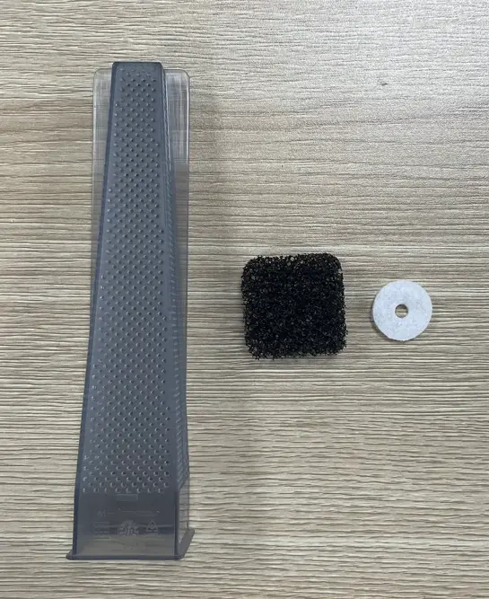 | |
| Display Screen | ||
| Plastic part | 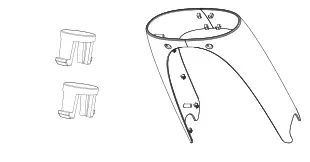 | |
| Wire | Power cord | |
| Switch | Micro switch 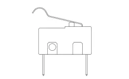 | |
| Motor | Main Motor & PTC | |
| Motor | Brush Roller Motor | |
| PCBA | 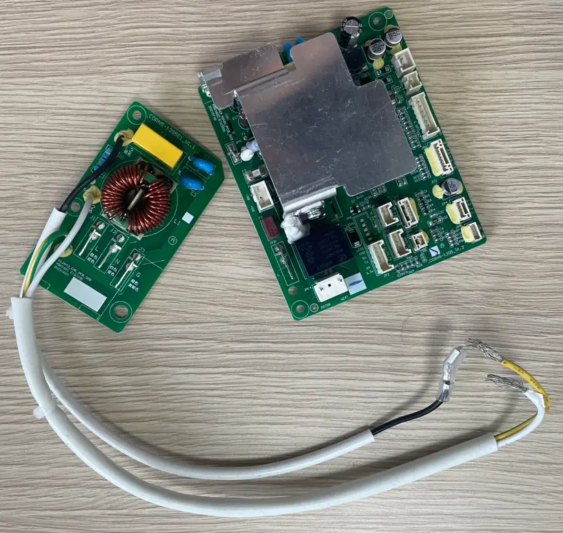 | |
| Scraper | ||
| Sensor | Sewage sensor | |
| Sensor | barometric pressure sensor | |
| Sensor | Humidity sensor | |
| Sensor | Water level sensor | |
| Pump | ||
| Flexible Extension Hose | 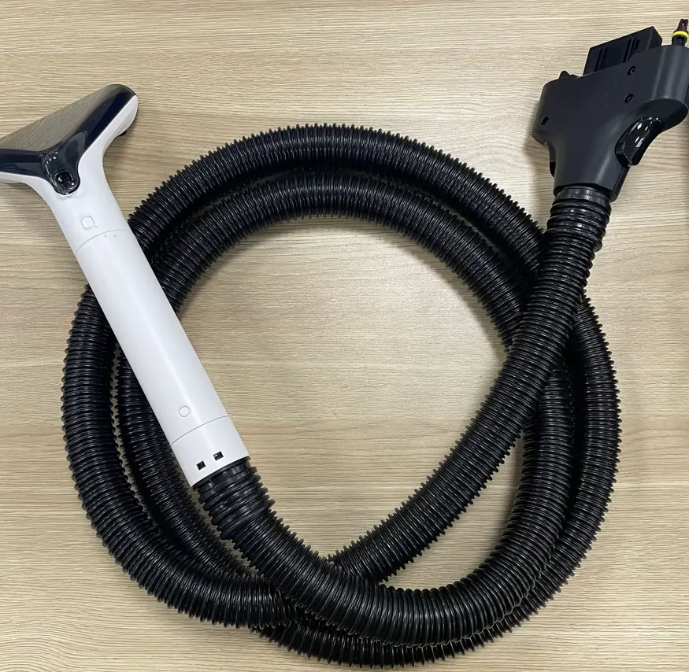 | |
| Repair Wheel | 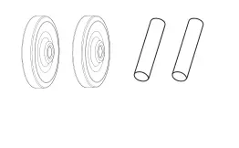 | |
| Handle | ||
| CWT | ||
| DWT |
Wiring diagram
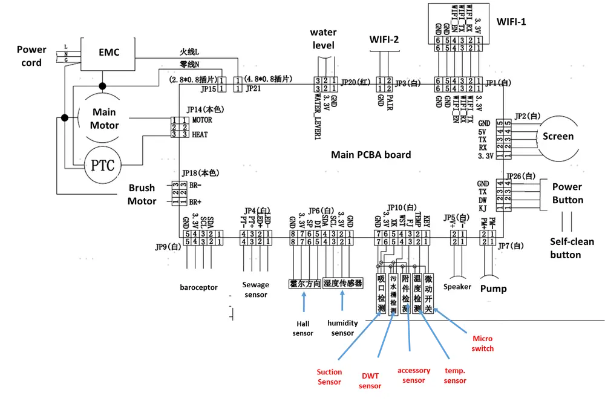
Tear down Guide
Tear down handle& Accessory
Pull the handle up after holding according to photos as below
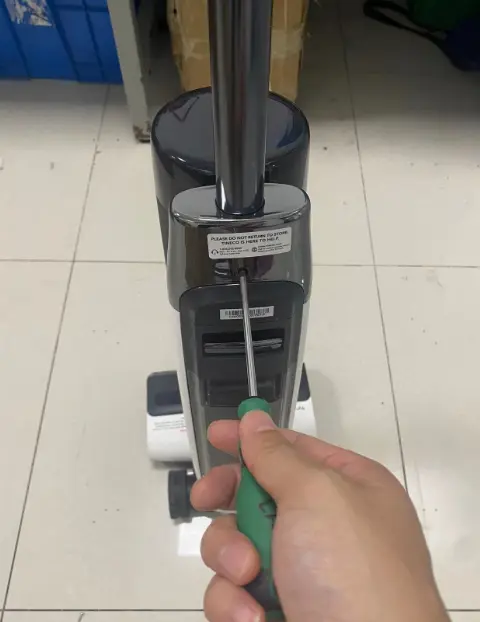
Disassembly all accessories
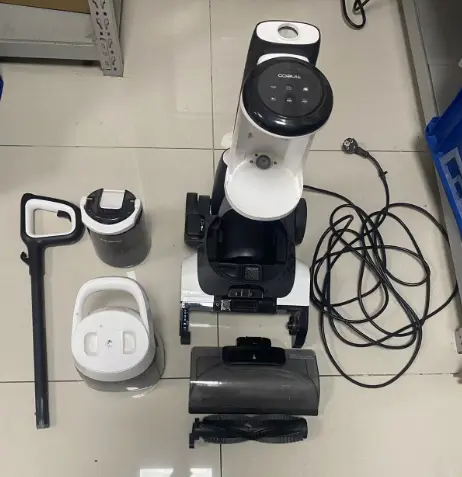
Tear down Display Screen
Pry up and disassemble Body Tube Deco Cover
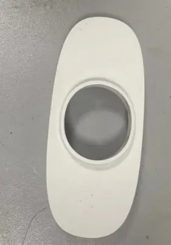
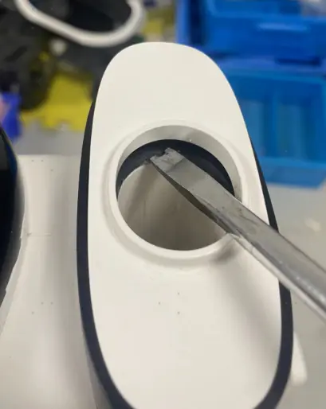
Remove screw and disassemble Body TOP DECO Cover
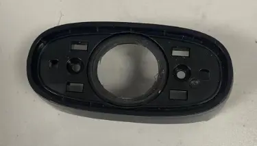
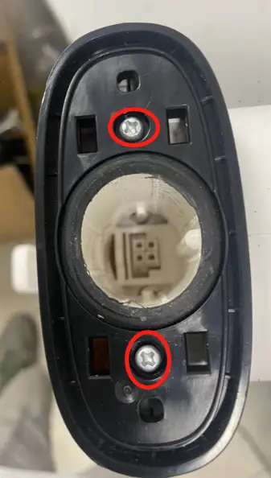
Pry up and Clockwise rotation to teardown display screen
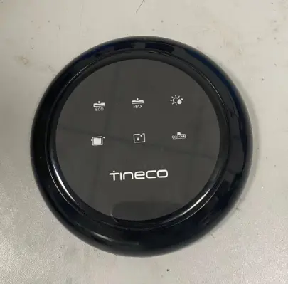
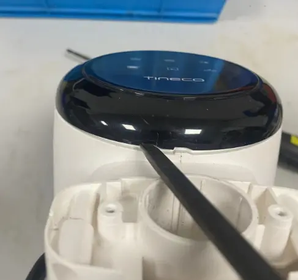
Tear down Brush Top Cover
Disassemble the Scraper and Small wheel
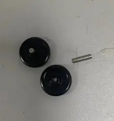
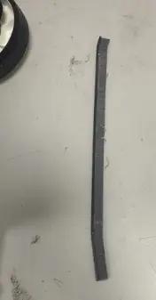
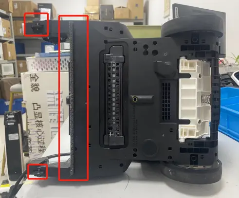
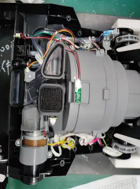
Remove screws to disassemble the Brush Top Cover
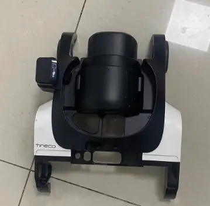
Tear down Brush roller Motor
Refer to the steps 3.0 to disassemble Brush Top Cover
Remove Screws to disassemble the Brush roller Motor
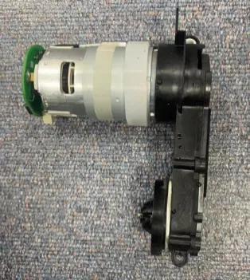
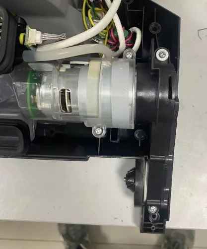
Tear down Main Motor and PTC（Sewage /humidity sensor）
Refer to the steps 3.0~4.0 to disassemble the Screen & PCBA
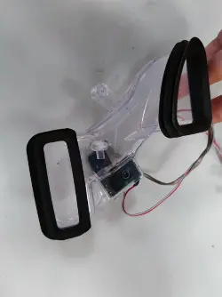
Remove screws to disassemble the Suction Air Channel（Sewage sensor）
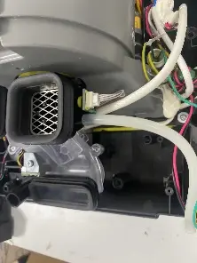
Remove Screws and unplug terminal to disassemble the Main motor and PTC
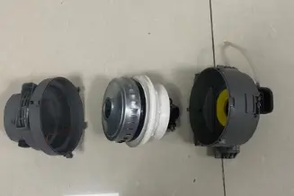
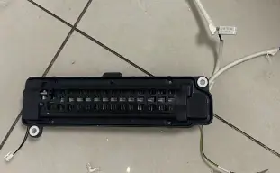
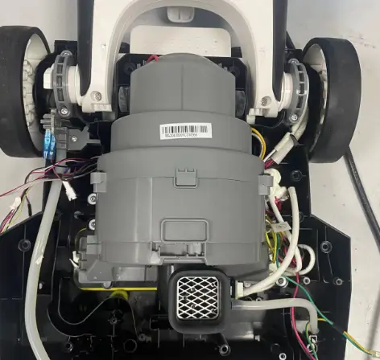
Unscrews and disassemble the humidity sensor
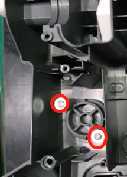
Tear down Micro swtich(big wheel)Refer to the steps 3.0~5.0
Unscrew screws to remove Micro swtich
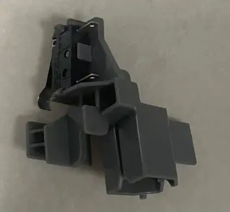
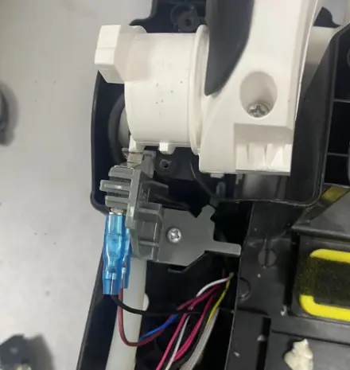
Unscrew screws and disassemble big wheel
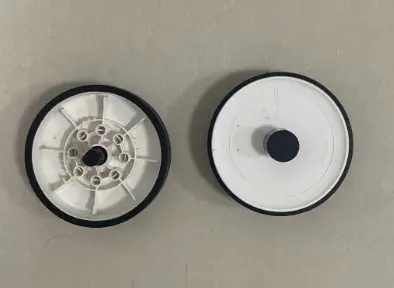
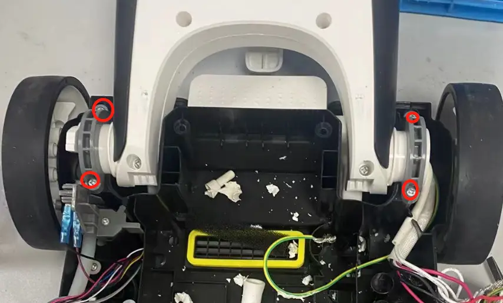
After disassemble big wheel,we can separate Assy brush part and Assy Body Part
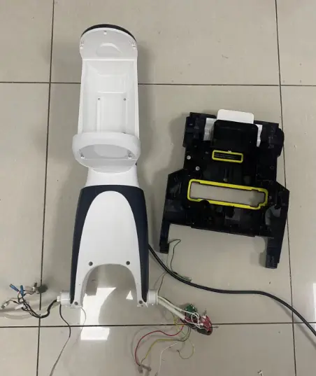
Tear down Assy Body Part(Plastic part/Wire/water level sensor/Pump/PCBA)
Refer to the steps 3.0~6.0
Unscrew screws to disassemble Body CWT Front Cover
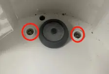
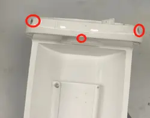
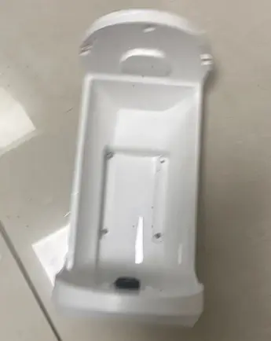
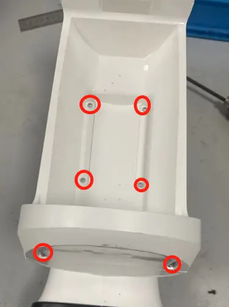
Unplug the pipe to disassemble water valve
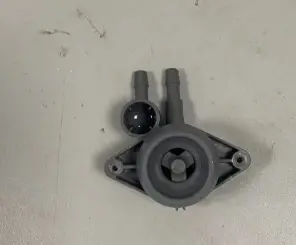
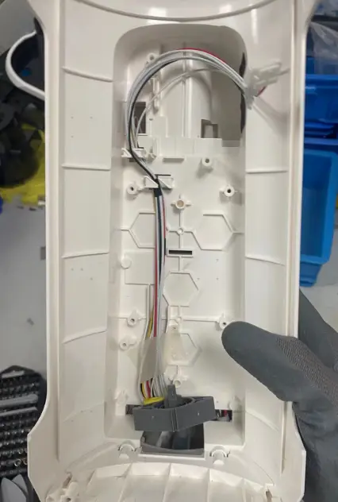
Pry up to disassemble the plastic part
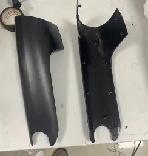
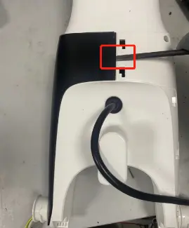
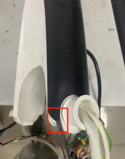
Unscrew screws to disassemble Body Front Cover and Body Rear Cover
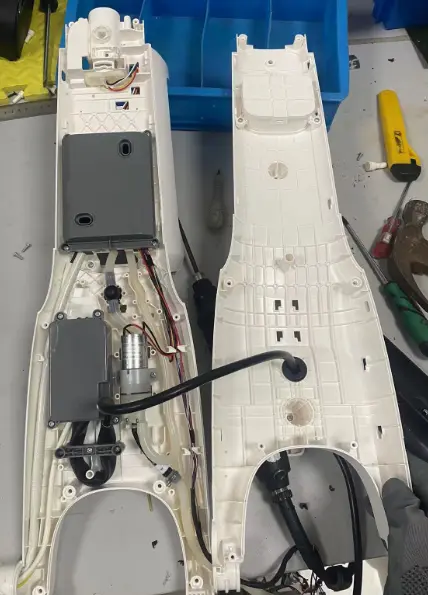
Unscrew screws to disassemble Wire
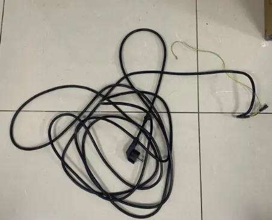
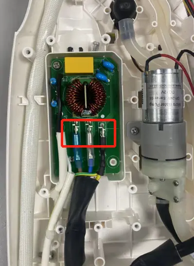
Unscrew screws to disassemble Water level sensor
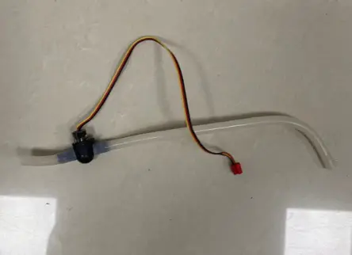
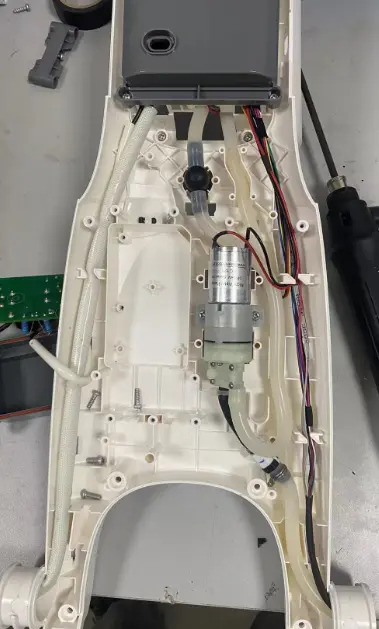
Unscrew screws to disassemble Pump
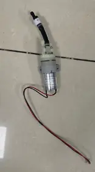
Unscrew screws to disassemble PCBA
Repair Guide
| Failure System | Failure Phenomenon | No | Failure Mode | Repair Solution | Spare Parts |
|---|---|---|---|---|---|
| Water circulation system Failure | No/less spray water | CWT Failure | replace CWT | CWT | |
| spray hole blocked | clean spray hole | maintenance | |||
| Brush roller cover blocked | Clean or replace | Brush roller cover | |||
| Under CWT sponge filter blocked or damage | Clean or replace sponge filter | sponge filter | |||
| pump Failure | replace pump | pump | |||
| main PCBA Failure | replace main PCBA | main PCBA | |||
| pipe blocked | replace water pipe | water pipe | |||
| pipe bent or broken | fix or replace pipe | water pipe | |||
| water level sensor blocked | replace water level sensor | water level sensor | |||
| leaking water | CWT leaking water | replace CWT | CWT | ||
| pump Failure | replace pump | pump | |||
| water level sensor broken | replace water level sensor | water level sensor | |||
| water pipe loose | Re-plug water pipe | water pipe | |||
| DWT broken | replace DWT | DWT | |||
| brush cover damaged | replace brush cover | brush roller cover | |||
| Sponge filter damage | replace sponge filter | sponge filter | |||
| water pipe damage | replace water pipe | water pipe | |||
| Flexible Extension Hose damage | replace Flexible Extension Hose | Flexible Extension Hose | |||
| no suck up water | brush cover damaged | replace brush cover | brush roller cover | ||
| Sponge filter not install properly | reinstall Sponge filter properly | maintenance | |||
| brush roller damage | replace brush roller | brush roller | |||
| Scraper damage | Replace scraper | Scraper | |||
| motor Failure | replace main motor | Main motor | |||
| brush motor Failure | replace brush roller motor | brush roller motor | |||
Turn on Failure
| turn on but no reaction , indicator not light up | handle Failure | replace handle | handle | |
| Power cord failure | Replace power cord | Power cord | |||
| Main PCBA Failure | replace main PCBA | Main PCBA | |||
| After pressing the power button, the indicator lights up, but it doesn't work after releasing the micro switch. | Micro switch Failure | replace Micro switch Failure | Micro switch | ||
| Motor Failure | replace motor | Main motor | |||
| Main PCBA Failure | replace main PCBA | Main PCBA | |||
| stop running after several times | Motor Failure | replace motor | Main motor | ||
| Main PCBA Failure | replace main PCBA | main PCBA | |||
| Power short circuit | Replace power cord | power cord | |||
| mode switch Failure | switch mode but no reaction | handle Failure | replace handle | handle | |
| Main PCBA Failure | replace main PCBA | main PCBA | |||
| switch mode but auto power-off | Main PCBA Failure | replace main PCBA | main PCBA | ||
| Motor Failure | replace motor | Main motor | |||
| abnormal noise | motor noise | motor Failure | replace main motor | main motor | |
| brush noise | Brush roller blocked by debris | Clean the debris channel blockage、debris wrapped around the brush roller 、suction nozzle blockage; | maintenance | ||
| scraper has dirt buildup | clean the scraper | maintenance | |||
| The small wheel noisy | replace the repair wheel | repair wheel | |||
| Scraper broken | replace scraper | scraper | |||
| pump noise | pump noise | replace pump | pump | ||
| Brush roller not spinning | Brush roller stop spinning, and the machine alarm brush abnormal | brush roller is blocked | clean brush roller | maintenance | |
| Brush roller cover damage | replace Brush roller cover | Brush roller cover | |||
| brush roller motor Failure | replace brush roller motor | brush roller motor | |||
| Main PCBA Failure | replace main PCBA | Main PCBA | |||
| Brush roller not spinning with no alarm | Brush roller motor Failure | replace brush roller motor | Brush roller motor | ||
| Main PCBA Failure | replace main PCBA | Main PCBA | |||
| No Dry | Can’t dry or poor dry | PTC failure | Replace PTC | PTC | |
| Humidity sensor failure | Replace humidity sensor | Humidity sensor | |||
| Main PCBA Failure | replace main PCBA | Main PCBA |